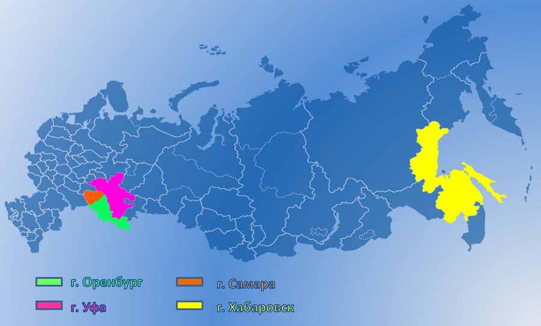

Общие сведения
ООО “АСУ ПРО” это инжиниринговая компания(системный интегратор), компетенцией которой являются системы автоматизации.Компания имеет собственный производственный офис в г.Оренбурге, филиалы : в г.Уфа, г.Самара, г.Хабаровск.Профессиональный состав организации – более 500 человек.Компания имеет все необходимые свидетельства и лицензии, в том числе на проектирование и выполнение работ на особо опасных производственных объектах.
Миссия компании: Удовлетворение спроса заказчиков(организаций и частных лиц) на проектные, СМР, ПНР, ТО, с соблюдением действующих норм и требований заказчика. Продвижения современных информационных технологий и технических решений.
Цель: Ведущая российская компания на рынке автоматизации, предлагающая лучшие решения, продукты и технологии. Квалифицированный персонал компании имеет необходимое техническое оснащение, профессиональную подготовку, свидетельства и право допуска на особо опасные производства объекты. Специалисты компании имеют большой опыт разработки и внедрения АСУТП, регулярно проходят профильное обучение.
Специалисты компании обучены и имеют допуск к работе со следующими техническими средствами:
— Система телемеханики “Магистраль-2”, “Магистраль-5” (ООО ”Газприборавтоматика”);
— Система телемеханики “СТН-3000” (ЗАО “Атлантиктрансгазсистема”);
— система МСКУ-5000 (НПФ ”Система сервис”);
— система DeltaV (Emerson);
— System 800xA (ABB);
— контроллеры серии Logix. (Rockwell Automation);
— контроллеры SCADAPack (Schneider Electric);
— контроллеры DirectLogic (AutomationDirect);
— контроллеры Modicon (Schneider Electric);
— контроллеры S7-1500, 300, 400 (Siemens);
— SCADA-системы : Intouch, iFix и др.
В 2014г. ООО «АСУ ПРО» получило статус официального системного интегратора (CERTIFIED System Integrator Partner) компании Schneider Electric/Wonderware.
Общество осуществляет следующие основные виды деятельности (в соответствии с разрешительными документами аккредитующих и надзорных ведомств):
— подготовка технических решений по созданию автоматизированных систем АСУ ТП, телемеханики технологических объектов;
— комплексное проектирование, строительно-монтажные работы и пусконаладочные работы, а также сервисное обслуживание законченных объектов и систем, метрологическое обеспечение;
— автоматизация отдельных видов технологических процессов транспорта и подготовки нефти и газа, технический и коммерческий учёт энергоресурсов;
— приемо-сдаточные испытания на всех стадиях пуско-наладочных работ, разработка необходимых методик измерений и испытаний (МИ);
— создание и внедрение автоматизированных систем контроля и учёта энергоресурсов (АСУЭ);
— метрологическое обеспечение средств измерений (СИ) и измерительных каналов автоматизированных систем, систем телемеханики, АСУ ТП, АСУЭ, АСТУЭ, АСКУЭ ;
— метрологическая экспертиза технической документации;
— инжиниринговые услуги;
— инструментальные измерения и испытания в электроустановках, измерительных комплексов и систем энергообеспечения;
— энергетические обследования (в части испытаний и измерений в электроустановках).
— внедрение на автоматизируемых объектах современных методов и средств измерений, автоматизированного контрольно-измерительного оборудования, информационно-измерительных систем и комплексов, а также средств управления и регулирования в соответствии со стандартами отрасли или концепцией перспективного развития создаваемого объекта;
— при разработке систем автоматизации высокопрофессиональные специалисты компании разрабатывают и адаптируют программное общесистемное и уникальное программное обеспечение (ПО), выполняют интеграцию программно-технических средств различных производителей;
— монтаж (демонтаж), наладка, испытания, ремонт, калибровка, регулировка, пуск, аттестация и поверка средств измерений на технологических объектах ;
—сборочное производство сертифицированных шкафов и щитов систем автоматизации и телемеханики, электротехнических шкафов и щитов;
— производство програмно–технических комплексов (ПТК) шкафного исполнения (шкафы автоматизации ША, ШТ, ШДП, ШС).
Компания ООО «АСУ ПРО» имеет свою производственную базу , оснащённую необходимым метрологическим, испытательным, измерительным и вспомогательным оборудованием.
Вся серийно выпускаемая продукция сертифицирована в системе ГОСТ Р и соответствуют высоким стандартам качества и надежности
Стандарты системы менеджмента качества ООО «АСУ ПРО» (СТО СМК) обеспечивают реализацию всех необходимых требований к качеству, составу и технологии выполняемых работ.
ООО «АСУ ПРО» на основе договоров (контрактов) имеет возможности обеспечить создание и поставку систем автоматизации(шкафов управления, систем телемеханики и АСУЭ) индивидуальной разработки с учетом дополнительных требований заказчика.
В роли потребителя могут выступать любые организации (ведомства, фирмы и др.), которые либо используют продукцию непосредственно, либо заказывают ее в интересах других организаций.
География ООО «АСУ ПРО» 